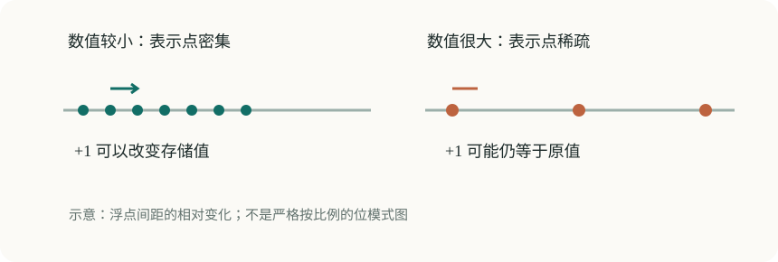

3.6 线搜索的数值边界：导数、曲率与浮点停滞
下降不等式是在实数运算中推导的，程序执行却依赖有限精度。函数值接近机器精度时，“没有下降”可能来自表示精度，而不是算法方向失效；要同时看梯度、步长、模型和计算尺度。
实数步长与浮点步长并不是一回事
线搜索公式 x_new=x+αp 假设新点可以按实数精确形成。机器浮点数有有限有效位数：当 |x| 很大而 |αp| 相比之下过小时，计算出的 x_new 可能和 x 完全相同，即使数学上 α＞0、p≠0。
例如在常见 IEEE 754 双精度下，1e16+1.0 等于 1e16。于是再计算 f(x_new) 与 f(x) 必然得到完全相同的数值；继续缩小 α 只会加重这种停滞。程序应该报告精度受限，而不是无限尝试回溯。
为什么方向导数也可能不可信
Armijo 与 Wolfe 条件依赖 φ′(0)=∇f(x)ᵀp 和 φ′(α)。如果梯度由差分近似而来，差分步长过小时相近函数值会相消，过大时截断误差又增加。使用解析导数或自动微分通常可以降低这一误差，但也不消除浮点数范围、溢出和目标求值噪声。
对强 Wolfe 来说，斜率数据的误差还可能让程序错误判断曲率条件。检查函数值和梯度的有限性，以及对方向导数进行必要的复核，比一味调小 c₁、c₂ 更重要。

负曲率与下降方向不是一个概念
若 Hessian 有负特征值，沿对应方向的二次模型存在向下弯曲。负曲率方向满足 dᵀHd＜0，但未必满足 gᵀd＜0。对初始线搜索来说，下降方向条件是 gᵀp＜0，两类方向需要分清。
一些方法结合负梯度与负曲率信息，尝试避开非极小驻点；信赖域方法则能利用负曲率直接在有界球内选择更有利的步长。它们都需要附加的算法条件才能说明收敛到何种驻点。
什么情况应该立即停止并给出诊断
一旦出现 f 或梯度不是有限数、x+αp=x、连续多次没有可区分的函数值变化、步长低于容忍阈值、或者试探次数达到上限，程序应明确区分这些失败类型。它们不是同一件事，也不应该被掩盖成“算法收敛”。
合理终止还应检查最优性残差，例如 ‖∇f(x)‖，并结合相对目标下降和实际位移做判断。极小梯度不一定代表已找到局部极小，尤其在 Hessian 不定或驻点是鞍点时。
如何记录可复核的数值结果
一份能被别人复现的线搜索实验，至少应保存目标函数定义、初始化、下降方向、c₁/c₂、初始 α、每次试探的 φ 和 φ′、接受/拒绝原因、使用的精度与失败保护。
下面的 Python 例子只比较不同数量级下加 1 是否能够改变浮点值，它是表示精度实验，并非一条优化轨迹；不能直接据此断言某个优化算法必然失败。
交互：调整参数观察判据
思考：若 x+αp 与 x 在浮点运算下相等，继续缩小 α 是否有帮助？为什么只看函数值“没有下降”无法区别停滞与驻点？
实时计算
Python：可复现的断言
仅观察双精度数值尺度导致的不可见更新；math.ulp 提供当前浮点数相邻表示间距，不涉及任何外部依赖。
"""Show floating-point step stagnation at increasing magnitude."""
import math
import sys
def probe(power: int):
if not 0 <= power <= 18:
raise ValueError("power out of teaching range")
x = float(10 ** power)
proposed_step = 1.0
new_x = x + proposed_step
return x, new_x, new_x == x, math.ulp(x)
if __name__ == "__main__":
for n in (12, 14, 15, 16, 17):
x, y, stuck, ulp = probe(n)
print(f"10^{n}: x+1==x -> {stuck}, ULP={ulp}")
assert math.isfinite(y)
assert probe(12)[2] is False
assert probe(16)[2] is True
assert probe(17)[3] > probe(12)[3]
assert sys.float_info.radix == 2